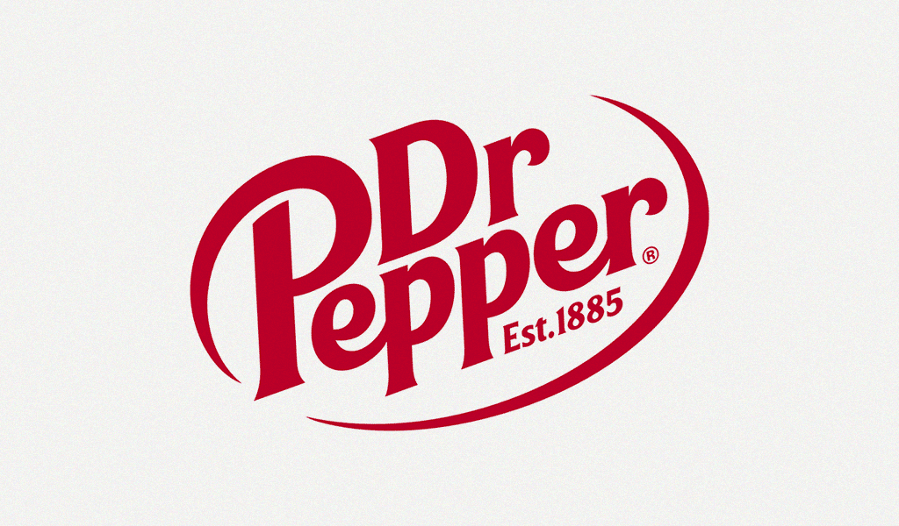

About
Hello world!
Hi, my name is Daniel Ko.
I was born in South Korea and raised in California, and I'm currently studying Computer Science at
the University of Wisconsin-Madison. Most recently, I was an intern at Captial One, implementing infrastructure and database as code for the Transaction Intelligence Machine Learning team.
Previously, I was an intern at Zendesk, building tools to improve developer
productivity in the CI/CD space. I was also
Google Summer of Code 2021 Participant
for Spinnaker where I worked on a developing a hosted playground version of Spinnaker aimed at
new users to test out its UI and core features.
You can tell that I am a huge Dr. Pepper fan by the gigantic picture on this page. If I don't have
any Dr. Pepper
laying around, I enjoy iced cold brew and sugar free energy drinks.
When I'm not thinking in code or in ones and zeros,
I love to transcribe and translate music on Genius,
play guitar while analyzing chord progressions (the backdoor progression
and major 7ths have a special place
in my 💖).